T362 · Efectos de mejora de torres (M65)
Propuesta visual para revisar antes de integrar. Dos efectos neutros teñibles: Refuerzo (nivel 2) y Maestría (nivel 3). Las imágenes se pueden abrir en tamaño original con clic.
8 cuadros192 × 192 px por cuadroatlas 4 × 2PNG RGBAno integrado
Vista rápida animada
Refuerzo · 0,5 s · 16 cps

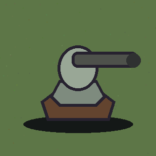
Maestría · 0,7 s · ~11 cps

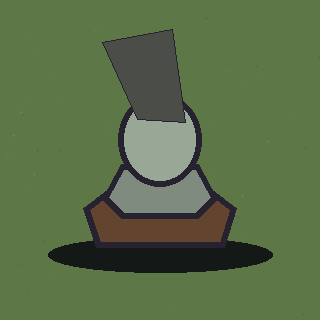
Atlas propuestos
Orden de lectura izquierda a derecha y de arriba abajo. Centro de cuadro en (96, 96); primer cuadro vacío/casi vacío y cuadro ocho transparente. Ambos archivos quedan por debajo del límite de 150 KB.
Refuerzo · 29 KB

Maestría · 52 KB

Legibilidad en cuatro terrenos
Las dos escalas muestran el mismo cuadro de animación en los cuatro temas; 34 px se aproxima al tamaño pequeño de juego. Las torres y terrenos son esquemáticos, solo para revisar contraste.
Refuerzo · 192 px por cuadro

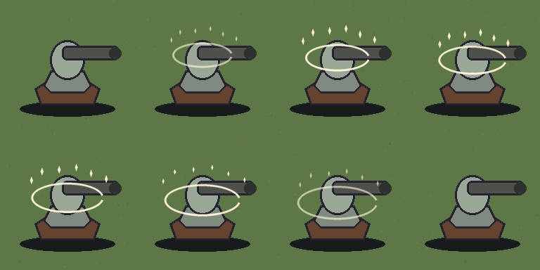

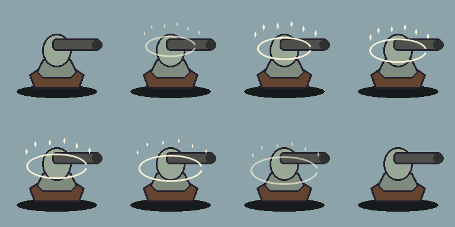

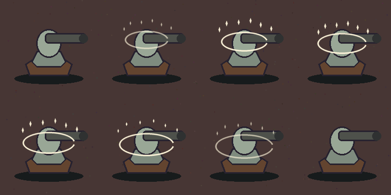

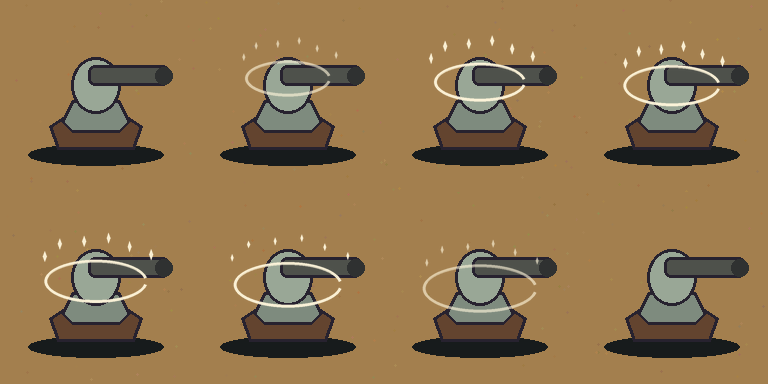

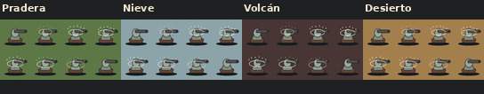
Maestría · 192 px por cuadro

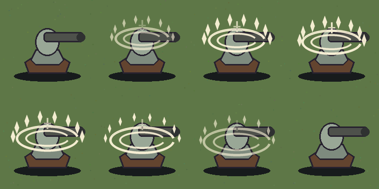

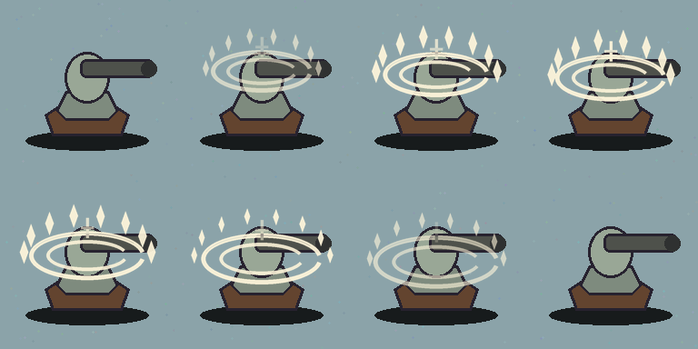

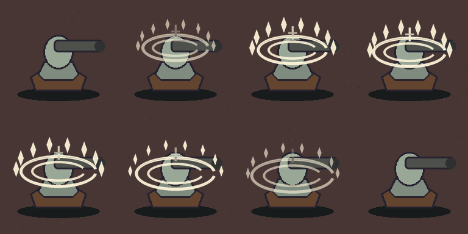

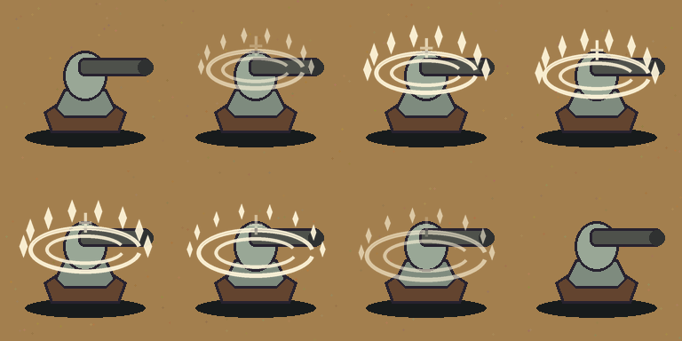

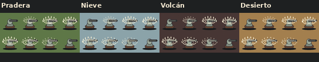
Tinte de cinco familias
Simulación del color aplicado por modulate; una fila por nivel. Colores representativos de Ametralladora (ámbar), Hielo (celeste), Tesla (violeta), Fuego (naranja) y Múltiple (azul).
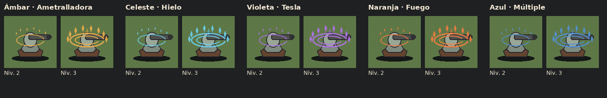
Escala de cámara y tamaño de torre
Maqueta de lectura al 70 % en PC y 150 % en celular, con mecanismos 1×1 y Mortero 2×2. Es un esquema y no captura del juego ni comprobación de viewport real.
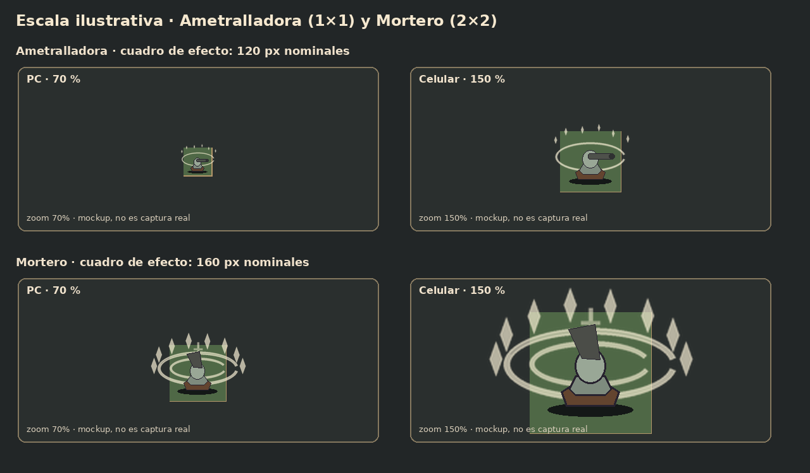
Comparación con el anillo actual
El anillo actual de construcción (0,3 s) frente a las dos propuestas. La torre del montaje es una silueta simplificada, no un sprite real. La propuesta busca diferenciar ambos niveles sin cubrir el mecanismo.
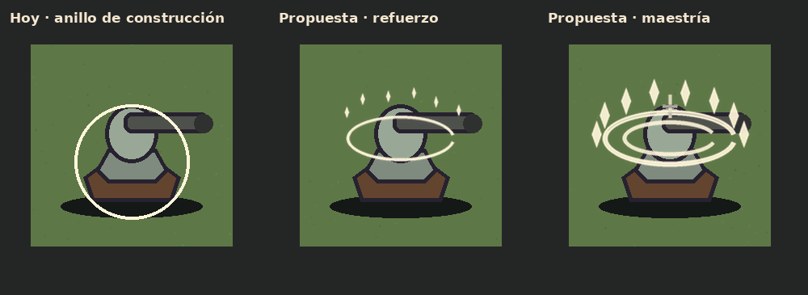
Notas y límites
- Son dibujos neutros marfil y bronce pálido; el juego los tiñe con el color de cada torre.
- El anillo se abre al ascender; Maestría agrega el segundo anillo, el destello cruzado y más chispas.
- Los mockups no usan sprites reales ni capturas de una partida. La legibilidad sobre el arte final y el rendimiento en un celular real quedan para T364.
- La ficha cita la P-65-6 como compuerta, pero la spec M65 vigente ya resuelve D-135: un solo diseño neutro teñido. Esta muestra sigue la decisión vigente.
- Pendiente: aprobación de Lucas. Nada fue copiado a
assets/, no hubo integración, ni prueba en dispositivo.